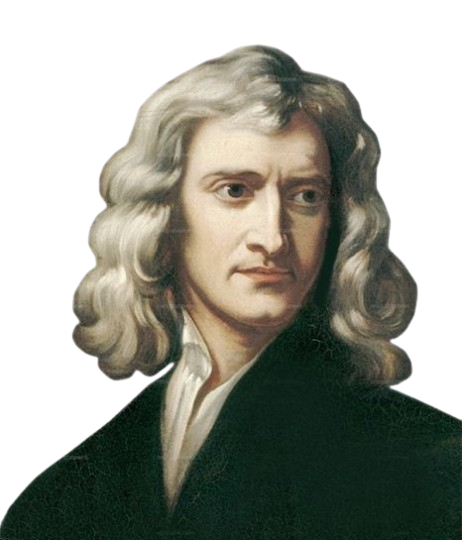

Las leyes de Newton son fundamentales para comprender el comportamiento del movimiento en el universo. Estas leyes explican cómo y por qué los objetos se mueven o permanecen en reposo, lo que permite analizar desde situaciones cotidianas, como empujar un carrito, hasta fenómenos más complejos como el movimiento de los planetas o el diseño de vehículos. Su aplicación es esencial en campos como la física, la ingeniería y la tecnología, ya que permiten predecir con precisión cómo reaccionará un objeto ante una fuerza. Aunque existen teorías más avanzadas, como la relatividad, las leyes de Newton siguen siendo la base del estudio de la mecánica clásica y continúan siendo utilizadas en la mayoría de los contextos prácticos.
¿Quién fue Isaac Newton?
Isaac Newton (1643-1727) fue un físico, matemático, astrónomo, teólogo, inventor y alquimista inglés. Es conocido por su trabajo en la mecánica clásica, la ley de gravitación universal y la óptica, así como por su desarrollo del cálculo infinitesimal. Newton fue una figura central de la Revolución Científica y su influencia en la ciencia es inmensa. Su obra más destacada, Naturalis Principia Mathematica , publicada en 1687, cambió para siempre la historia de la ciencia, sentando las bases de la física clásica. Gracias a sus aportes, se le considera el padre de la física moderna.
Primera Ley de Newton: Inercia
La primera ley establece que todo objeto tiende a mantener su estado de reposo o movimiento rectilíneo uniforme mientras no actúe sobre él una fuerza externa. Esto significa que un cuerpo que está quieto no comenzará a moverse por sí solo, y uno que se mueve en línea recta a velocidad constante no cambiará ni su dirección ni su velocidad si no interviene algo que lo fuerce a hacerlo. Esta tendencia natural a resistirse al cambio en su estado de movimiento se llama inercia. La masa de un objeto está directamente relacionada con su inercia: a mayor masa, mayor será la resistencia al cambio. Un ejemplo cotidiano de esta ley se observa cuando viajamos en un vehículo que frena bruscamente: nuestro cuerpo tiende a seguir en movimiento hacia adelante. Eso ocurre porque nuestro cuerpo quiere seguir moviéndose a la misma velocidad a la que íbamos, hasta que el cinturón de seguridad (o el tablero del auto) ejerce una fuerza que nos detiene.Fuerza neta = m ⋅ a
Si la fuerza neta es cero (Fuerza neta=0), entonces: 𝑎 = 0 Esto significa que no hay aceleración: el objeto no cambia su velocidad.
Patear una pelota de fútbol
Imaginemos que una pelota de fútbol está quieta en el campo. Mientras nadie la toque, seguirá inmóvil porque no hay ninguna fuerza externa actuando sobre ella. Esto ocurre por la inercia, que es la tendencia natural de los objetos a mantenerse en su estado: si están quietos, seguirán quietos. Ahora bien, si un jugador se acerca y la patea, está aplicando una fuerza externa sobre la pelota. En ese momento, la inercia se rompe y la pelota comienza a moverse. Sale disparada en línea recta y a cierta velocidad, dependiendo de cuán fuerte fue la patada. Después de ser pateada, la pelota seguiría moviéndose indefinidamente si no existieran otras fuerzas. Pero en la realidad, hay fricción con el suelo y resistencia del aire, que son fuerzas que se oponen al movimiento. Estas fuerzas hacen que la pelota se desacelere poco a poco hasta que finalmente se detiene. Este ejemplo muestra cómo funciona la Primera Ley de Newton: la pelota permanecía en reposo hasta que una fuerza externa (la patada) cambió su estado. Luego, siguió moviéndose hasta que otras fuerzas externas (fricción y aire) detuvieron su movimiento.

Segunda Ley de Newton: Fuerza y Aceleración
La segunda ley de Newton es la que relaciona la fuerza con el movimiento. Se expresa mediante la fórmula:
F = m × a
donde F es la fuerza neta aplicada sobre un cuerpo, m es su masa y a es la aceleración que experimenta
Esta ley nos indica que la aceleración de un cuerpo es proporcional a la fuerza neta que actúa sobre él e inversamente proporcional a su masa. En otras palabras, si aplicamos una fuerza sobre un objeto, este acelerará en la dirección de la fuerza. Cuanto mayor sea la fuerza, mayor será la aceleración; pero si el objeto es muy pesado (tiene mucha masa), necesitará una fuerza mucho mayor para alcanzar la misma aceleración. Esta ley es clave para calcular el comportamiento de objetos en movimiento y es aplicada constantemente en la ingeniería, la robótica, la mecánica automotriz, la aeronáutica, entre otras disciplinas. Un ejemplo sencillo sería empujar un carrito de supermercado vacío y luego otro lleno. Con la misma fuerza, el carrito vacío acelera más que el lleno, porque su masa es menor. También se observa esta ley en los deportes, cuando un futbolista chuta el balón: cuanto más fuerte sea el golpe (mayor fuerza), más lejos y más rápido se moverá el balón.

Tercera Ley de Newton: Acción y Reacción
La tercera ley establece que por cada acción existe una reacción de igual magnitud y en sentido opuesto. Es decir, cuando un cuerpo ejerce una fuerza sobre otro, este responde con una fuerza igual pero en dirección contraria. Esta ley explica por qué es posible caminar, nadar, volar, o lanzar cohetes al espacio. Por ejemplo, cuando una persona camina, empuja el suelo hacia atrás con los pies. En respuesta, el suelo ejerce una fuerza hacia adelante que impulsa a la persona a avanzar. De manera similar, un cohete funciona porque expulsa gases hacia abajo, y como reacción, recibe un impulso hacia arriba. Aunque estas fuerzas son iguales y opuestas, no se anulan entre sí, ya que actúan sobre cuerpos diferentes. Por eso, la fuerza que ejerce la Tierra sobre una pelota (gravedad) y la que la pelota ejerce sobre la Tierra no cancelan el movimiento de la pelota al caer.
Cuando una persona nada, mueve sus brazos y piernas empujando el agua hacia atrás. Este movimiento es la acción: el nadador ejerce una fuerza sobre el agua. Según la Tercera Ley de Newton, el agua responde con una fuerza de igual magnitud pero en sentido contrario, es decir, una fuerza que empuja al nadador hacia adelante. Esta es la reacción. Por eso, cada vez que empujas el agua hacia atrás, avanzas un poco más hacia adelante. Cuanto mayor sea la fuerza con la que impulsas el agua, mayor será la fuerza de reacción que te mueve. Este mismo principio se aplica también al mover las piernas, como en el estilo crol o mariposa: cada patada que empuja el agua hacia abajo o hacia atrás genera una fuerza contraria que te impulsa hacia adelante. Aunque las fuerzas son iguales y opuestas, no se anulan, ya que una actúa sobre el agua y la otra sobre el nadador. Así, nadar es posible gracias a esta constante interacción entre acción y reacción que permite que el cuerpo avance en el agua.

Las leyes de Newton son pilares fundamentales en la física que explican cómo y por qué se mueven los objetos. Más que teoría, estas leyes nos permiten entender situaciones cotidianas y fenómenos del universo con claridad y lógica. Para quienes se inician en el mundo de la ciencia, dominar estas tres leyes es dar el primer gran paso hacia una comprensión más profunda de cómo funciona nuestro entorno físico.